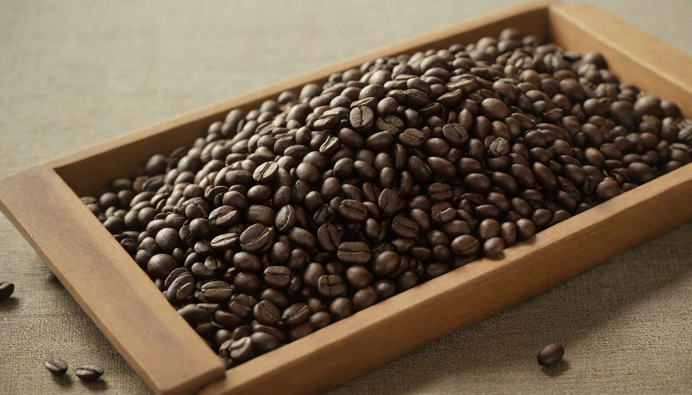

浅煎りから深煎りの順に
-
浅煎り
エチオピアの水洗い
950円100g 税込
紅茶、レモンの皮、白い花
冷めてくると柑橘の感じが強くなります。浅煎りがはじめてなら、まずこれを。
-
浅煎り
ケニアの水洗い
1,050円100g 税込
カシス、トマト、はっきりした酸
酸がいちばんはっきりした豆です。少し濃いめに淹れると、甘さもついてきます。
-
中浅煎り
ルワンダの水洗い
900円100g 税込
赤いりんご、はちみつ
浅煎りの酸が少し苦手な人に。甘さが先に来て、酸はあとから少しだけ。
-
中煎り
コロンビアの水洗い
800円100g 税込
ミルクチョコ、くるみ
毎日飲むならこのあたり。牛乳を入れても味が消えません。
-
中煎り
ブラジルの天日干し
700円100g 税込
ピーナッツ、ココア、甘い後味
苦みも酸も強くなく、甘い後味が残ります。店でいちばん多く量っている豆です。
-
中深煎り
グアテマラの水洗い
850円100g 税込
黒糖、カカオ、少しスパイス
黒糖のような甘さと苦みが半分ずつ。冷めても重くなりません。
-
深煎り
インドネシアの半乾き脱穀
850円100g 税込
杉の葉、ダークチョコ、重い苦み
苦みが重く、口に長く残ります。甘い菓子と合わせる人が多い豆です。
-
深煎り
けむりブレンド
750円100g 税込
焦がしたキャラメル、長く残る苦み
ブラジルとインドネシアを別々に焼いてから合わせています。牛乳で割る人に。

名前は、豆が育った国と、収穫したあとの実の取り方で呼んでいます。けむりブレンドだけは店で付けた名前です。値段は100gの税込で、仕入れで変わることがあるので目安として見てください。
焙煎度の言い方
同じ豆でも、焼く時間で味がかなり変わります。うちでは5つの段で呼んでいます。
- 浅煎り
豆はまだ明るい茶色。酸と果物の香りが前に出ます。湯は熱めで淹れてください。
- 中浅煎り
酸が丸くなって、甘さが出てくる所。浅煎りの入り口に。
- 中煎り
酸と苦みが半分ずつ。いちばん癖が少なく、牛乳にも合います。
- 中深煎り
苦みが前に出て、酸はほとんど感じません。甘さは残ります。
- 深煎り
表面に少し油が浮くくらいまで。苦みと焦げた甘さ。湯は少しぬるめで。
迷ったら
店で「どれがいいですか」と聞かれたら、いつも飲んでいるコーヒーの話を先に聞いています。缶やペットボトルのコーヒーをよく飲むなら中深煎りか深煎りから、紅茶が好きなら浅煎りから始めると外れが少ないです。
決めきれない時は、50gずつ2種か3種を量って、飲み比べてみてください。量り方は買い方に書いています。